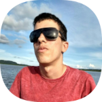

Meu nome é Lucas Weidas, sou aluno de programação desde de abril de 2021. Entre 2016 e 2017, passei por um momento muito dificil de depressão, mas apartir de 2018, começei a melhorar e consegui vencer a depressão que quase acabou com minha vida e hoje, faço o que considero ser minha maior conquista, programar.